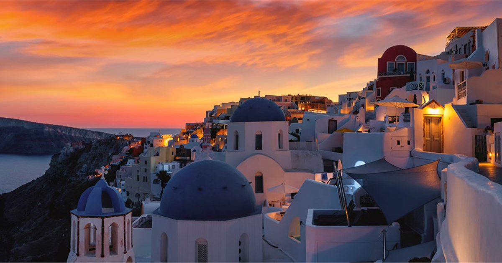
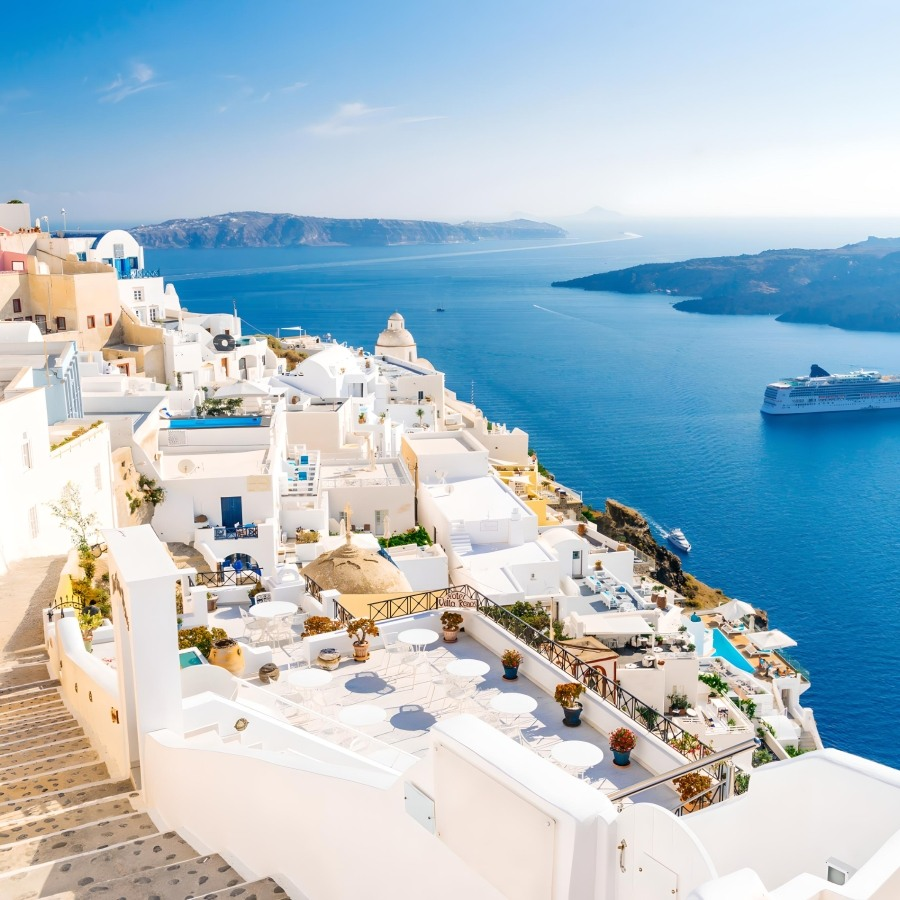
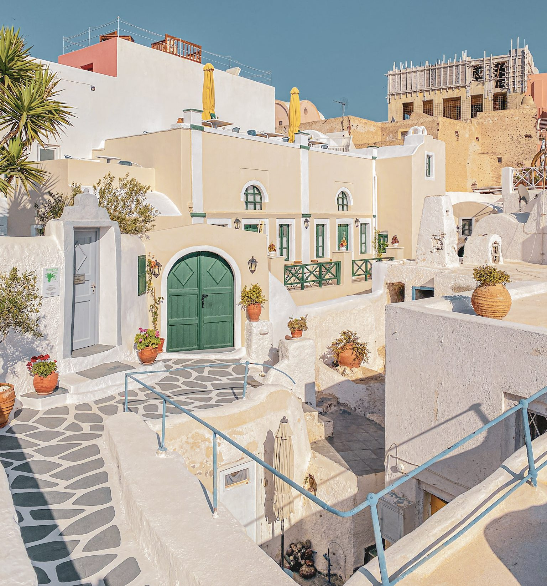
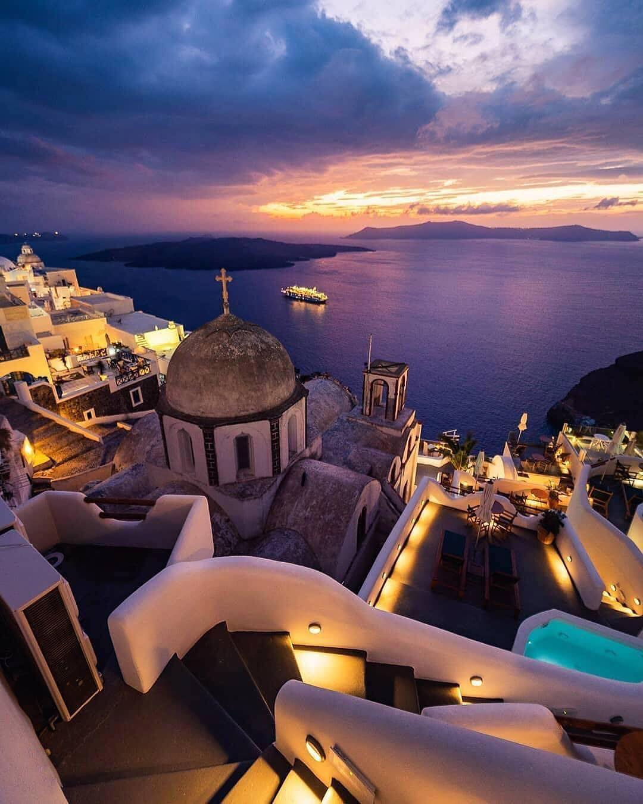
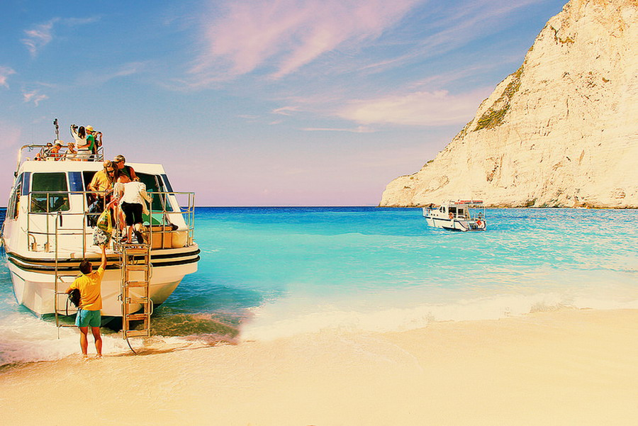

O Santoriniju
Santorini je jedno od najpoznatijih i najlepših grčkih ostrva. Nalazi se u Egejskom moru i poznat je po svojim belim kućama, plavim kupolama, vulkanskim pejzažima i prelepim pogledima. Ovo je destinacija koju bih voleo/la da posetim zbog jedinstvene atmosfere i prirodnih lepota.
Prelepo more
Kristalno čisto Egejsko more pruža savršene uslove za odmor i uživanje u prirodi.
Jedinstvena arhitektura
Bele kuće i karakteristične plave kupole predstavljaju jedan od simbola Santorinija.
Prelepi zalasci
Santorini je posebno poznat po spektakularnim zalascima sunca, naročito u mestu Oia.
Najpoznatija mesta
Santorini ima mnogo zanimljivih mesta koja vredi posetiti. Ovo su neka od najpoznatijih.

Oia
Oia je jedno od najpoznatijih mesta na ostrvu. Poznata je po belim kućama, plavim kupolama i spektakularnom zalasku sunca.

Fira
Fira je glavni grad Santorinija. Sa litica pruža se predivan pogled na more i okolna ostrva.

Crvena plaža
Crvena plaža je poznata po svojim crvenkastim stenama i vulkanskom pejzažu koji je čini posebnom.
Galerija
Pogledajte nekoliko fotografija koje prikazuju prirodne lepote i prepoznatljivu atmosferu Santorinija.

Bela sela
Prepoznatljive bele kuće koje se spuštaju niz obronke ostrva.

Zalazak sunca
Jedan od najlepših prizora koji Santorini čini posebnom destinacijom.

Plave kupole
Plave kupole i bela arhitektura jedan su od najpoznatijih simbola ostrva.

Egejsko more
Pogled na beskrajno plavetnilo Egejskog mora pruža osećaj potpunog mira.
Zašto bih posetio/la Santorini?
Santorini je moja omiljena destinacija jer predstavlja savršenu kombinaciju mora, prirode, arhitekture i kulture. Posebno bih voleo/la da posetim Oiu, istražim mala ostrvska mesta i uživam u zalasku sunca.
Kontakt
Ako želite da podelite svoje utiske ili saznate više o Santoriniju, možete poslati poruku.